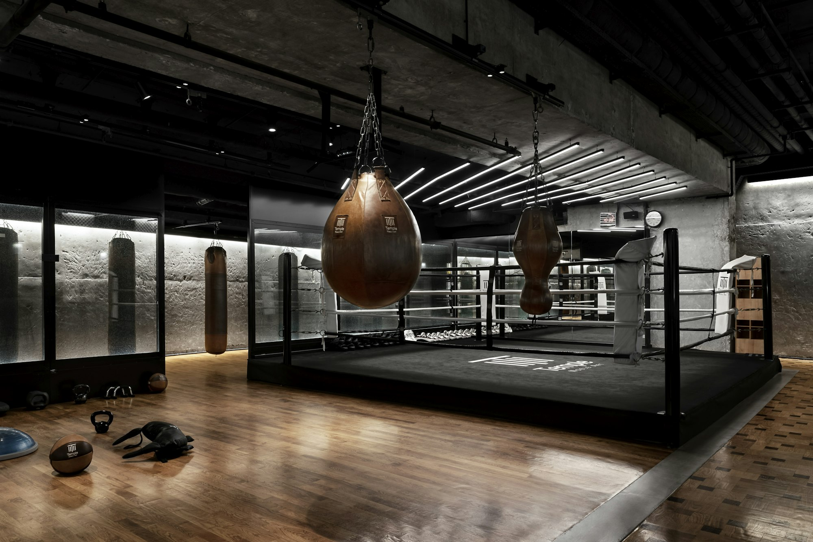
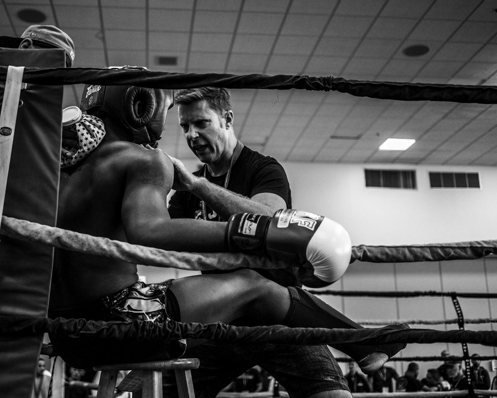

Portrait: Arnav Gupta (4:5)
Arnav Gupta
Co-founder · Mixed martial artsArnav trains in mixed martial arts. His coaches kept pointing out mistakes he couldn't feel himself, and that is where the idea for the glove came from.


All three of us play sports seriously, and we kept running into the same problem. A coach can only watch so much at once, so most of what we did in training was never properly looked at.
The equipment you train with is part of every single rep, so that is where we put the sensors. An AI model reads the data and tells you what to change, so you are not left guessing about your technique.
No clip-ons or extra straps. The sensors are built into the equipment, so nothing changes about how you train.
Fitness watches tell you how hard you trained, with calories and heart rate. We focus on how well you moved.
Kinesis doesn't replace your coach. It gives them data on every athlete, which makes it much easier to keep track of a whole group.
We each play a different sport, and we all had the same problem: lots of training, not much feedback.
Arnav trains in mixed martial arts. His coaches kept pointing out mistakes he couldn't feel himself, and that is where the idea for the glove came from.
Prisha plays badminton, where small changes in wrist movement make a big difference. She wanted a way to actually track those changes over time.
Dhruv plays football, where one coach has to watch an entire squad. He is focused on how Kinesis can work for teams and academies as well as individual players.